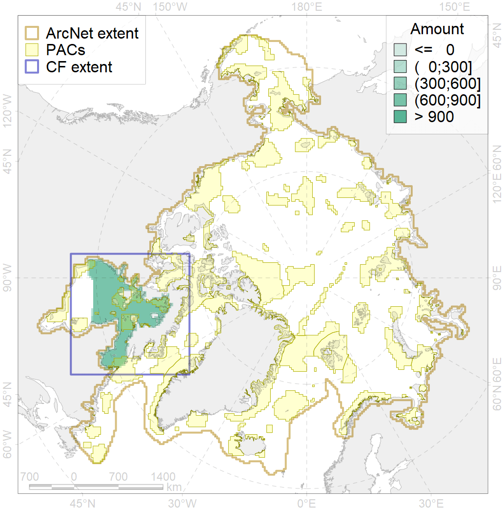
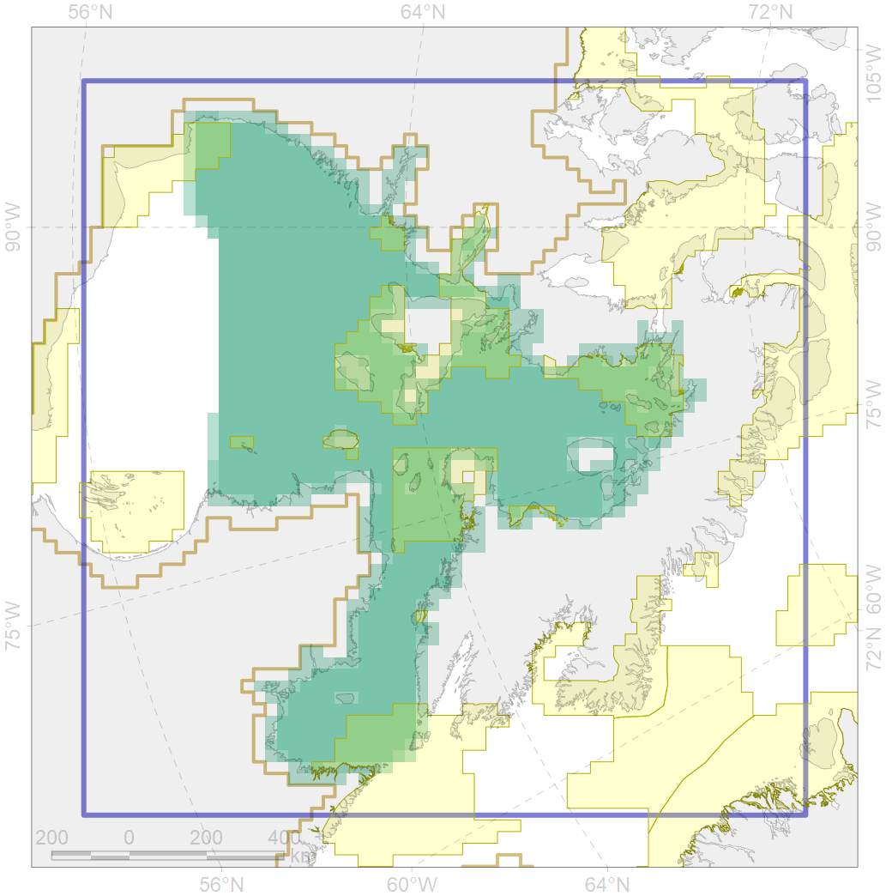

2022

| CF ID | 2022 |
| CF Name | Harp seal foraging areas in the Hudson Bay |
| Time Period | 2010 |
| Source(s) | Stephenson and Hartwig, 2010, |
| Seasonality | June-August |
| Depth Horizon | 0-400m |
| Methodology | Data compilation, expert input |
| Author Name | Irina Trukhanova |
| Notes | |
| Conservation Target Set in the Scenario | 0.24 |
| Conservation Target Achieved in the Scenario | 0.241 (Scenario: 100.3%) |
| PAC ID | Proportion in the PAC | Contribution to ArcNet Target Achievement | PAC’s Contribution to the Achieved Target |
|---|---|---|---|
| 66 | 4.3% | 15.6% | 15.5% |
| 67 | 7.2% | 26.4% | 26.3% |
| 68 | 0.6% | 1.8% | 1.8% |
| 69 | 1.2% | 4.3% | 4.3% |
| 72 | 0.8% | 1.6% | 1.6% |
| 73 | 4.8% | 18.0% | 17.9% |
| 74 | 0.2% | 0.8% | 0.8% |
| 75 | 0.0% | 0.1% | 0.1% |
| 76 | 3.5% | 11.6% | 11.6% |
| inner | 22.8% | 80.3% | 80.0% |
| outer | 77.2% | 20.1% | 20.0% |